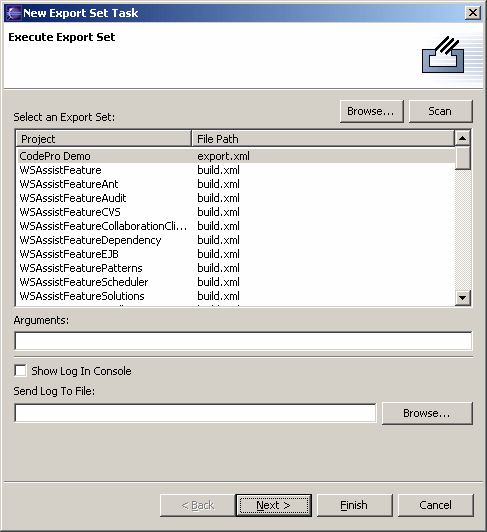

Schedule Export Set To schedule a Export Set to be run at a specified time, open the scheduler view, right click to access the popup menu, select the "New" submenu, and then select "Export Set". This opens the scheduler wizard so that export set may be configured. All Export Sets known to the system are shown in the list. If the Export Set is not listed, click the "Browse" button to select it in the project hierarchy or the "Scan" button to perform an exhaustive search of the loaded projects to find and Export Set files. Arguments to the Export Set process may be specified, and the Export Set results may be either logged to the Ant console or to a file. Click the "Next >" button to schedule when the message is to be displayed. |